TapTap开发自测 448541 / 0.4.5-ui-sample.6 · 新版待手机复审。
保留上版已认可方向，仍为内存隔离样板；刷新重建示例，不读写正式v037存档。
源码 bb4b22116e13706203b920c3f5202bed3e087fda
ZIP 12,004,918字节 / 190文件，SHA256 e054108905e86803332f2613be4d881f1322de9a4e95120718938a9f667e0871
收藏室的「居民观察」可查看已发现的三位居民和原生态动作；清理点击即完成，按原价只扣一次；默认详情只留当前物件大图。升级仍保留原费用与耗时，三态原画不变。
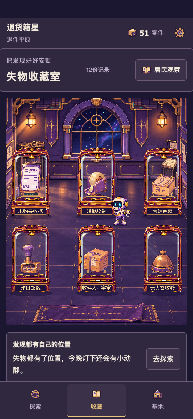
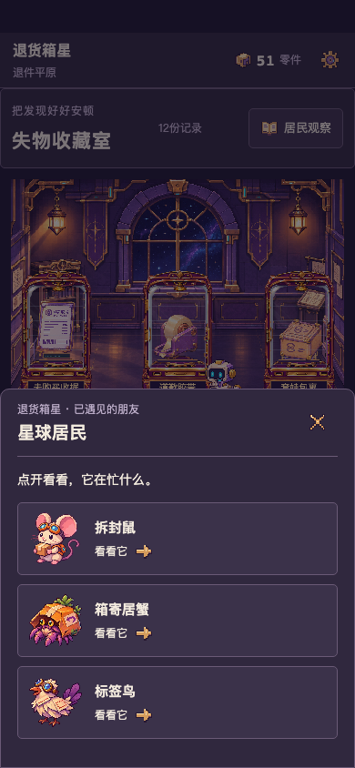
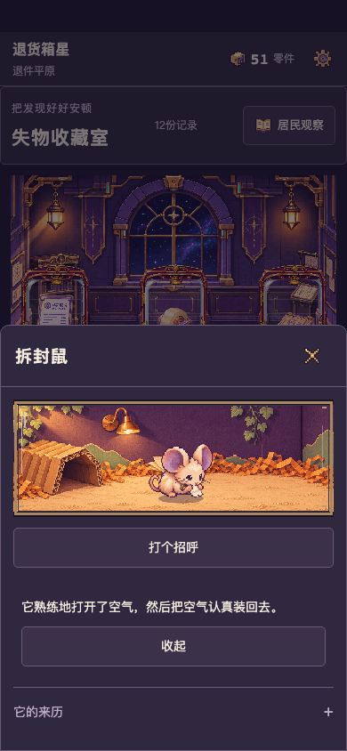
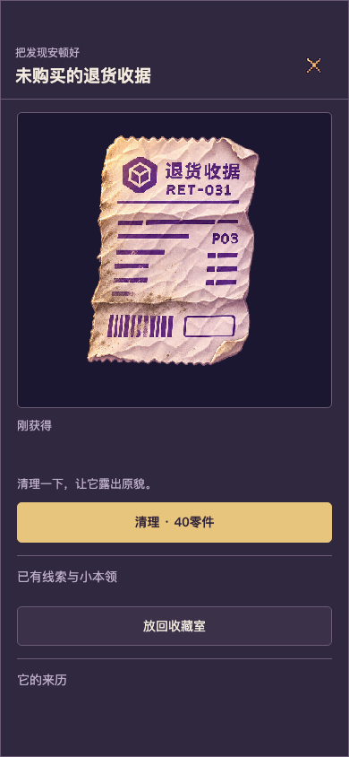
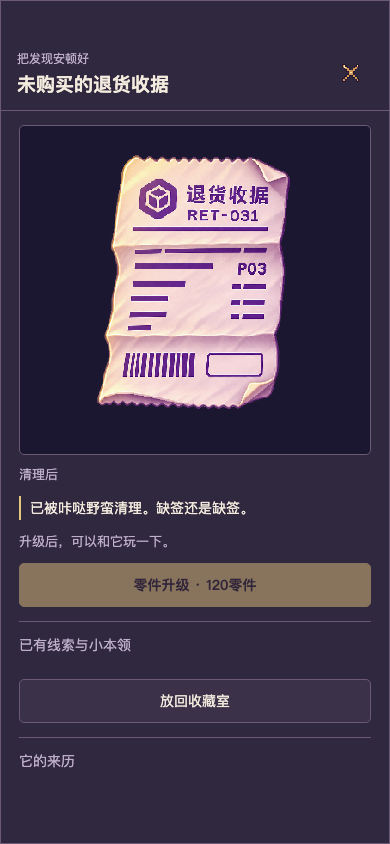
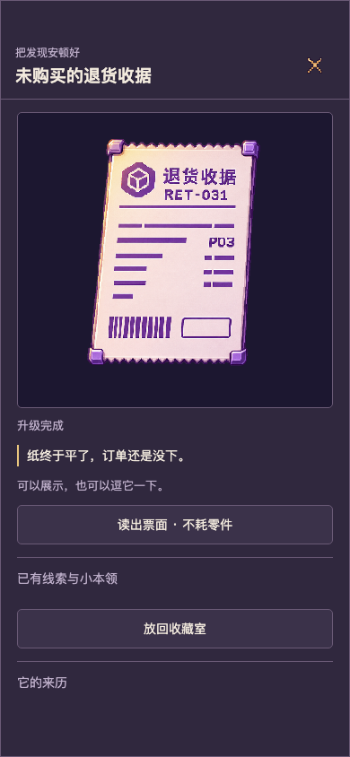
固定ZIP、自然1倍、无音轨。六物分别来自按原模型赚得资源的审核快照，不是同一新档或收益演示。每片含即时清理、原耗时升级和免费互动；另两片展示居民入口及跨页返回。
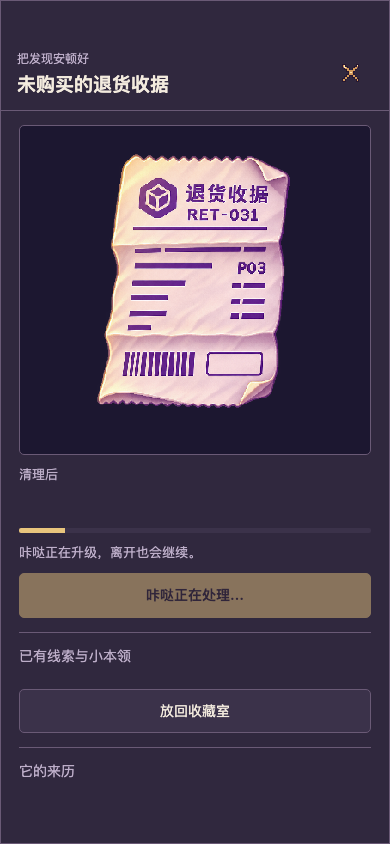
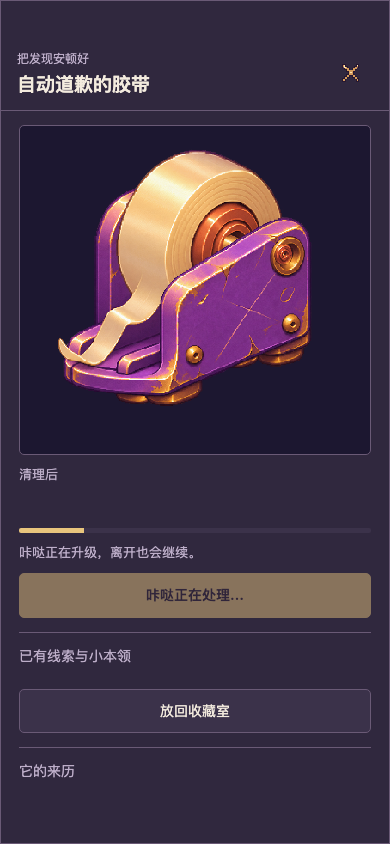
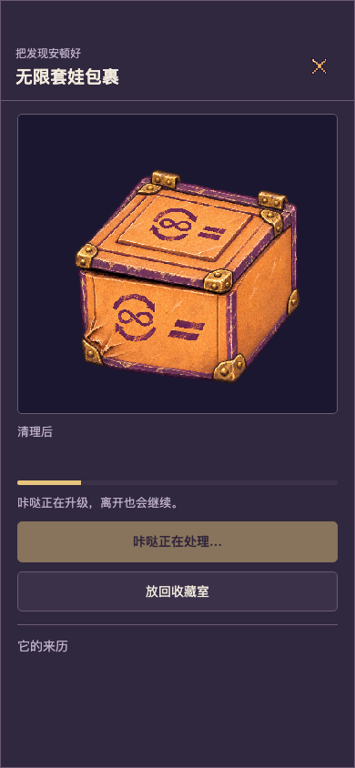
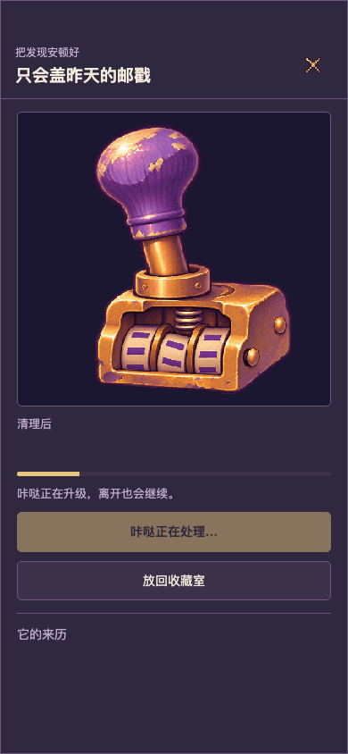
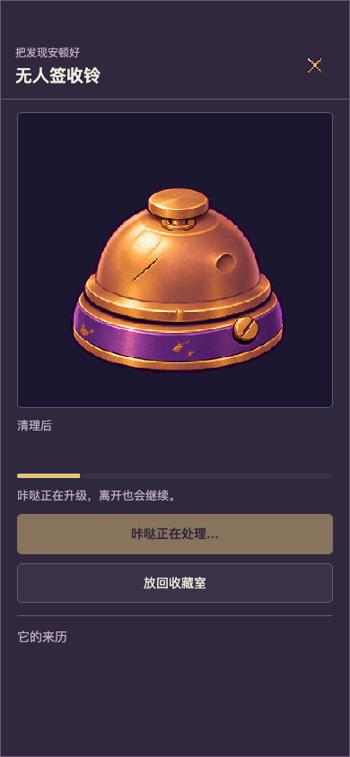
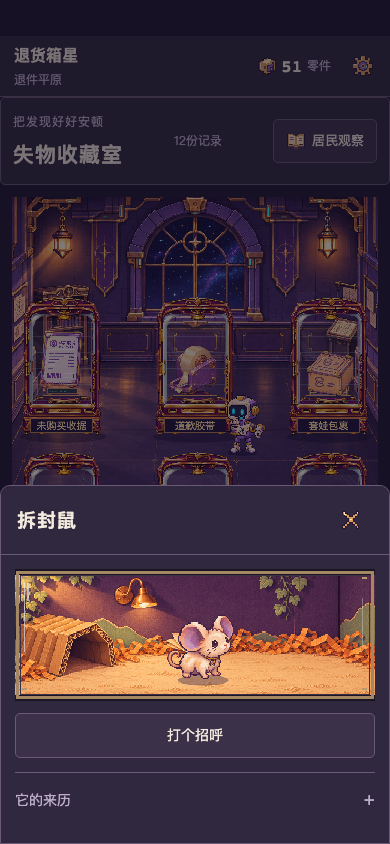
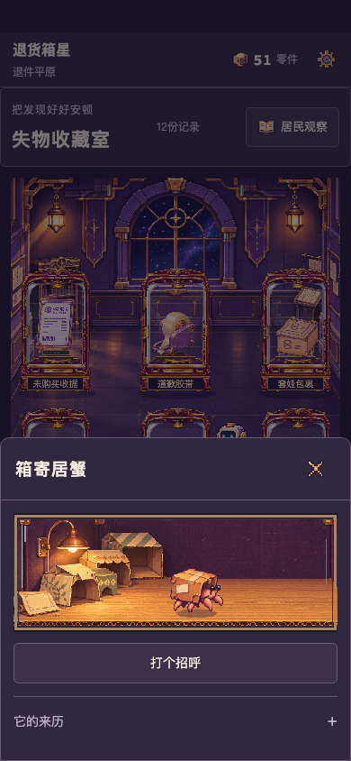
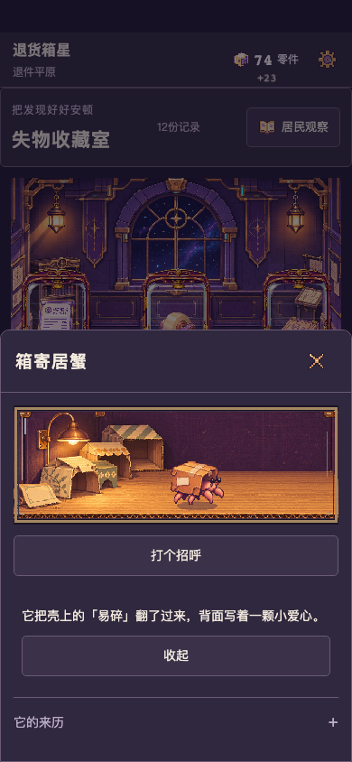
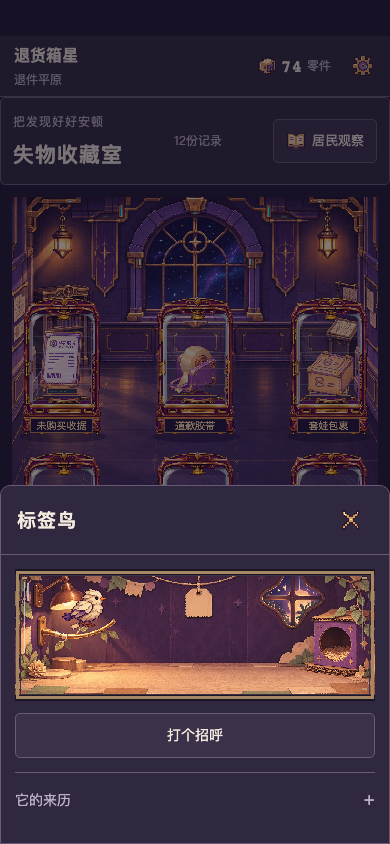
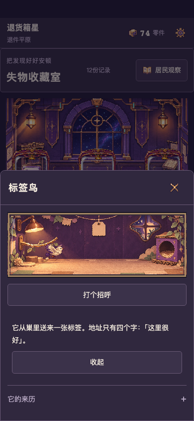
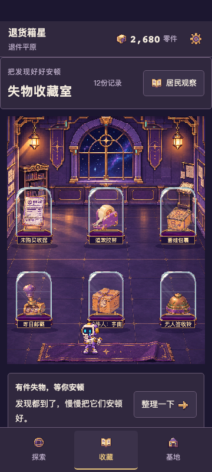
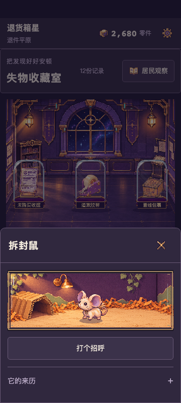
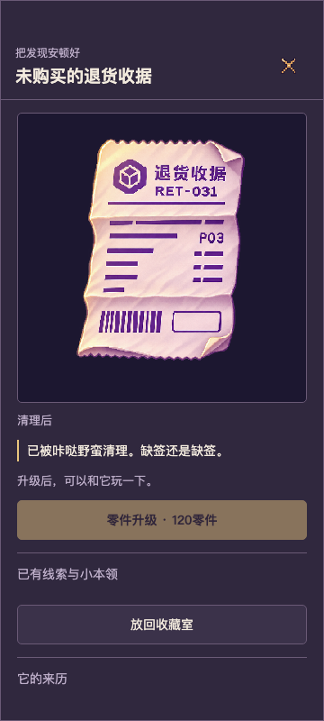
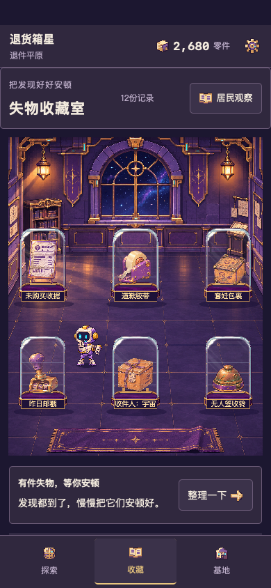
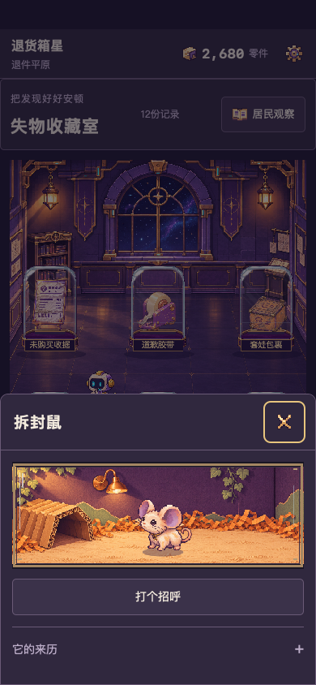
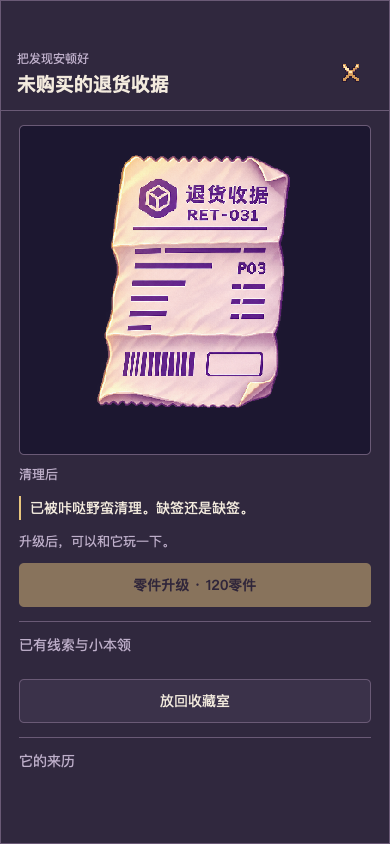
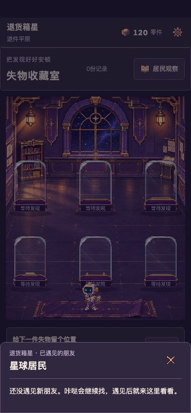
432单测、80项样板浏览器流程通过（360×800、390×844、桌面，Chromium/WebKit；触控为模拟）。新包真机触控、宿主安全区、锁屏返回、音效、发热待扫码测试。工程通过不代表美术或真机通过。尚未开始首星内容扩容。
固定包完整性与原价记录 · 80流程原报告 · 原生1倍播放记录 · 独立复核与已修复缺陷 · 完整原始记录 · TapTap回读 · 上一版35b3e46历史主题证据（非本包证明） · PR检查